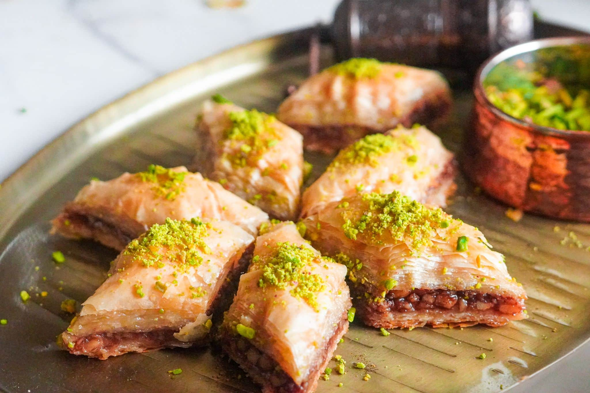

Shwamra is a vibrant community known for its rich cultural heritage and stunning natural landscapes. Nestled between rolling hills and lush forests, it offers a blend of traditional charm and modern conveniences. The locals are friendly and welcoming, celebrating their unique customs through lively festivals and delicious cuisine. Visitors to Shwamra can enjoy outdoor activities like hiking and exploring scenic trails, all while immersing themselves in the warmth and spirit of its people.
Donair
Donair is a beloved Canadian street food, especially popular in Halifax, Nova Scotia. This tasty dish features spiced, thinly sliced meat—typically beef or lamb—served in a warm pita with fresh tomatoes, onions, and a creamy garlic sauce. The combination of flavors and textures makes it a satisfying meal, perfect for late-night cravings or casual dining. Each bite is a delightful fusion of savory and tangy, showcasing the unique culinary influences that have shaped this iconic Canadian snack.
Kebab
Kebab is a flavorful and versatile dish enjoyed across many cultures, originating from the Middle East. Typically made with marinated pieces of meat—such as lamb, chicken, or beef—kebabs are skewered and grilled to perfection. They can be served in various styles, from juicy shish kebabs on sticks to doner kebabs, where the meat is cooked on a vertical rotisserie and sliced thin. Often accompanied by fresh vegetables, pita bread, and a variety of sauces, kebabs are a favorite for gatherings and street food lovers alike, offering a delicious blend of spices and smoky flavors in every bite.
Fattoush
Fattoush is a vibrant and refreshing Lebanese salad that celebrates the flavors of the Mediterranean. It typically features a mix of fresh greens, tomatoes, cucumbers, radishes, and bell peppers, all tossed together with crispy pieces of toasted or fried pita bread. What sets fattoush apart is its zesty dressing, usually made with olive oil, lemon juice, and sumac, which adds a tangy, slightly citrusy flavor. This salad not only offers a delightful crunch but also a burst of colors and textures, making it a perfect accompaniment to grilled meats or a light meal on its own.
Dessert
Baklava
Baklava is a rich, sweet pastry that hails from the Middle East and the Mediterranean region. Made from layers of thin phyllo dough, it’s filled with chopped nuts—usually walnuts or pistachios—and sweetened with honey or syrup. The layers are baked until golden and crispy, then generously drizzled with a fragrant syrup infused with rose or orange blossom water. Each bite offers a delightful crunch followed by a burst of sweetness, making baklava a beloved dessert for special occasions and a popular treat in many cultures around the world.

Knafe
Knafeh is a beloved Middle Eastern dessert known for its rich, indulgent flavors. Made with thin strands of dough called kataifi or with semolina, it’s layered with a gooey filling of cheese or a sweet cream, then baked until golden. Once out of the oven, it's drenched in fragrant sugar syrup, often infused with rose or orange blossom water, adding a delightful floral note. Knafeh is typically garnished with crushed pistachios, giving it a beautiful contrast in color and texture. This decadent treat is enjoyed warm, making it a favorite for celebrations and special occasions across the region.